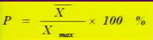

00:00
第四节 测验的效度
第一单元 效度的概念
一、效度的定义
在心理测验中，效度是指所测量的与所要测量的心理特点之间的符合程度，或者简单地说是指一个心理测验的准确性。
在测验理论中，效度被定义为在一组测量中，与测量目标有关的真实方差（或称有效方差）与总方差的比率。
二、效度的性质
（一）效度具有相对性
任何测验的效度都是针对一定的目标而言。
（二）效度具有连续性
只有程度上的不同，没有“全有”或“全无”的区别。
测验效度是测验结果的有效性程度。
01:50
第二单元 效度评估的方法
一、内容效度
（一）什么是内容效度
指的是测验题目对有关内容或行为取样的适用性，从而确定测验是否是所欲测量的行为领域的代表性取样。这种测验的效度主要与测验内容有关，故而得名。
（二）内容效度的评估方法
1、专家判断法
定义好测验内容的总体范围；编制双向细目表，确定内容的具体细节各自所占的比例；由每位评判者在评定量表上作出判断。
2、统计分析法
计算两个评分者之间评定的一致性（评分者信度）
两个测验复本上得分之相关（复本信度）
再测法也可用于内容效度的评估（测验-学习-再测验）
3、经验推测法
这种效度是通过实践来检验效度
（三）内容效度的特性
内容效度与所有效度一样，并非普遍适用。只有编制者与使用者定义的内容范围相同，编制者报告的内容效度对使用者才有意义。
内容效度也有时间上的特定性。
内容效度与表面效度不同。
08:51
二、构想效度
（一）什么是构想效度
是指测验能够测量到理论上的构思或特质的程度，即测验的结果是否能证实或解释某一理论的假设、术语或构思，解释的程度如何。
要回答的问题是：该测验欲测量什么心理构想？对该构想测得有多好？测验分数中有多少比例的变异数是来自测验所欲测之构想？
（二）构想效度的评估方法
1、对测验本身的分析
测验的内容效度
测验的内部一致性指标
分析被试者对题目的反应特点
2、测验间的相互比较
相容效度是构思效度的一个证据
区分效度是构思效度的又一个证据
因素分析法也是建立构思效度的常用方法
3、效标效度的研究证明
根据效标分成相对照的两组，比较测验成绩
观察分析测验高分组与低分组的心理特质
4、实验法和观察法证实
13:27
三、效标效度
（一）什么是效标效度
亦称实证效度，反映的是测验预测个体在某种情境下行为表现的有效程度。
分为同时效度和预测效度。
好效标的4个条件：
1.效标本身必须有效；
2.效标必须具有较高的信度，不随时间等因素而变化；
3.效标可以客观地加以测量，可用数据或等级来表示；
4.效标测量的方法简单，省时省力，经济实用。
（二）效标效度的评估方法
1、相关法：
相关法是评估效标效度最常用的方法，它是求测验分数与效标资料间的相关，这一相关系数称为效度系数。
19:02
2、区分法 ：
分析高分组与低分组分布的重叠量，或者计算每一组内得分超过（或低于）另一组平均数的人数百分比，或者计算两组分布的共同区的百分比。重叠量越大，说明两组分数差异越小，即测验的效度越差。
3、命中率法：
命中率法是当测验用来做取舍的依据时，用其正确决定的比例作为效度指标的一种方法。
23:04
第三单元 效度的功能
一、预测误差
效度系数的实际意义常常以决定性系数来表示，意旨相关系数的平方，其表达式是rxy的平方，它表示能够正确预测或解释效标的测验分数的方差占总方差的比例。
另一种表达方法是估计的标准误，它是指所有具有某一测验分数的被试其效标分数（Y）分布的标准差，也即真正效标分数落在某一范围内有多大可能性。
二、预测效标分数
在测验工作中，人们感兴趣的是从测验分数预测效标成绩，因此最常用的是Y对X的回归方程。
*回归方程：
*为了得到一个回归方程，必须确定a和bxy这两个常数的值。

三、预测效率指数

*E值的大小表明使用测验比盲目猜测能减少多少误差。例如一个测验的效度系数为0.80，那么E=40，这表明由于测验的使用，使得我们在估计被试的效标分数时减少了40%的误差。换句话说，预测误差仅为随机猜测所产生误差的60%。
27:12
第四单元 影响效度的因素
一、测验本身的因素
为了提高效度，要做到：
1.测验材料必须对整个内容具有代表性；
2.测题设计时应尽量避免容易引起误差的题型（如是非题）；
3.测题难度要适中，具有较高的区分度；
4.测验长度要恰当，即要有一定的测题量；
5.测题的排列按先易后难顺序。
二、测验实施中的干扰因素
（一）主试的影响因素
主试不符合标准化要求的任何做法
（二）被试的影响因素
兴趣、动机、情绪、态度和健康状况等。
三、样本团体的性质
（一）样本团体的异质性
异质性越高，分数分布范围大，测验效度越高。
1、如果只以选拔出来的被试为样本团体参加研究，会降低测验的效度。
2、选拔标准太高，样本团体的同质性增加，会降低测验的效度。
30:25
（二）干涉变量
包括年龄、性别、教育水平、智力、动机、兴趣、职业等。
美国心理学家吉塞利（E.E.Ghiselli）寻找干涉变量的方法：
1、用回归方程求每个人的预测效标分数，与实际效标分数相比较；
2、根据样本团体的组成，设立对照组，分别计算效度。
3、根据显而易见的干涉变量将其分为预测性高和预测性低的两个亚团体。
四、效标的性质
包括年龄、性别、教育水平、智力、动机、兴趣、职业等。
效标与测验分数之间是否呈线性关系是很重要的因素。皮尔逊积差相关系数的前提是假设两个变量的关系是线性的分布。
效标测量本身的可靠性如何亦是值得考虑的问题。
专栏5-4 信度与效度的关系
.信度是效度的必要而非充分条件
效度高必然信度高，而信度高并不一定保证效度高，说明信度高只是效度高的必要条件，并不是效度高的充分条件。
.效度是受信度制约的
信度系数与效度系数之间有这样一种关系：信度系数的平方根是效度系数的最高限度。
用公式表示如下：
信度系数的平方根又称信度指数，也就是说，效度系数的最高限度是信度指数。
35:36
第五节 项目分析
第一单元 项目的难度
一、难度的定义
二、难度的计算
（一）二分法记分的项目
（二）非二分记分的项目

三、难度水平的确定
（一）项目的难度
P值越接近于0.50，区分力越好。
（二）测验的难度
44:35
第二单元 项目的区分度
一、区分度的定义
项目区分度也叫鉴别力。取值范围在 –1至+1之间。
二、计算方法
（一）鉴别指数
*D=PH-PL
项目鉴别指数与评价标准
1965年，美国心理测验专家伊贝尔（L.Ebel）根据长期的经验提出鉴别指数评价项目性能的标准，
鉴别指数（D） |
项目评价 |
0.40以上 |
很好 |
0.30～0.39 |
良好，修改后会更佳 |
0.20～0.29 |
尚可，但需修改 |
0.19以下 |
差，必须淘汰 |
（二）相关法
点二列相关 二列相关 相关法：
47:14
三、区分度与难度的关系
D的最大区分度与项目难度的关系
项目通过率 |
D的最大值 |
| 1.00 |
0 |
| 0.90 |
0.20 |
| 0.80 |
0.40 |
| 0.70 |
0.60 |
| 0.60 |
0.80 |
| 0.50 |
1.00 |
| 0.40 |
0.80 |
| 0.30 |
0.60 |
| 0.20 |
0.40 |
| 0.10 |
0.20 |
| 0 |
0 |
|